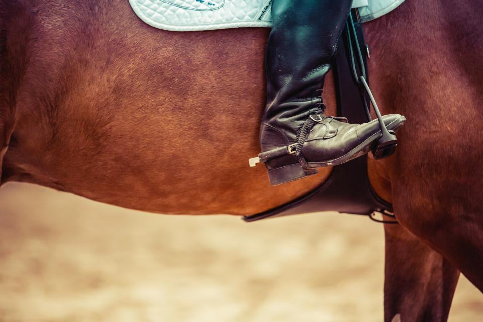
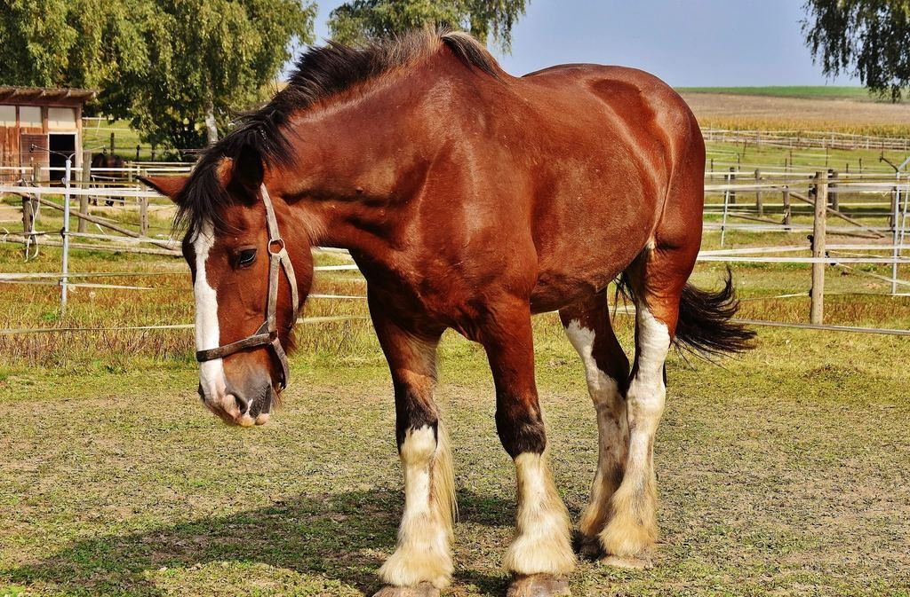
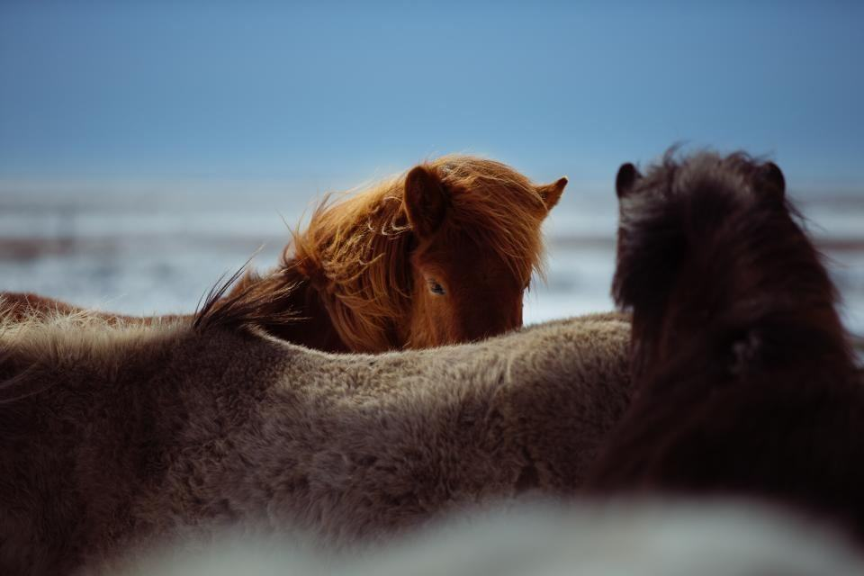

Tjänster
Kontoret på Bogesundsgatan sköts av två anställda, Marie Hellström och Nils Bodin, som bokar och fakturerar för alla. Varje hovslagare har sina egna stall och hästar, men kalendern är gemensam. När någon är sjuk eller ledig flyttas besöken till en kollega i samma område, och journalen följer med.
Var i Sjuhärad står hästen?

En namngiven delägare
Varje häst har en namngiven hovslagare som är delägare i företaget. Det är hennes eller hans kunder, och de flesta har haft samma stall i över tio år.
Hovslagarna sätter själva sina rutter och arbetsdagar, men inom föreningens gemensamma priser.
Vikarier och jour
En ensam hovslagare som blir sjuk lämnar hästarna utan hovvård i veckor. Hos oss flyttas besöken till en kollega inom två dagar, och helgjouren går runt mellan alla medlemmar.
Jourtelefonen är bemannad fredag 16 till måndag 7 alla helger.

Ortopedi inom laget
Tre av medlemmarna har vidareutbildat sig i ortopedisk skoning och tar remisser från veterinärerna i Borås och Ulricehamn. De andra elva skickar svåra fall vidare inom laget.
Ortopediska besök kostar samma sak oavsett vem i laget som remitterar.

Gemensamt inköp
Föreningen köper skor, söm och gasol för alla fjorton på en gång. Det ger lägre priser som vi låter hästägarna få del av.
Varje år går överskottet tillbaka till medlemmarna efter hur mycket var och en har arbetat.
Bokning, besök och vikarie
- 1

Kontoret svarar
Marie eller Nils frågar var hästen står och lägger in den hos hovslagaren i ditt område.
- 2

Din hovslagare kommer
Samma person varje gång, med journal och anteckningar från tidigare besök.
- 3

Faktura från föreningen
En faktura med samma pris oavsett vem som skodde. Du kan även swisha på plats.
- 4

Om något händer
Blir din hovslagare sjuk ringer kontoret och erbjuder en kollega inom två dagar.
Fjorton gesäller, en försäkring
- Fjorton gesällbrevAlla fjorton medlemmar har gesällbrev, och tre har vidareutbildning i ortopedi.
- Medlemmar i HovslagareförbundetAlla medlemmar är med i förbundet och går dess fortbildningsdagar.
- Heta arbeten för allaGiltigt certifikat för heta arbeten för alla som arbetar med gasolässja.
- Gemensam ansvarsförsäkringFöreningen har en gemensam försäkring som täcker alla medlemmar.